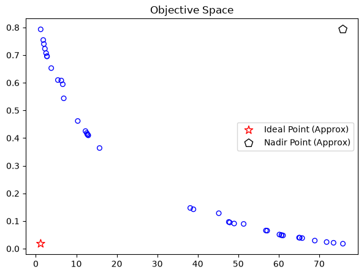
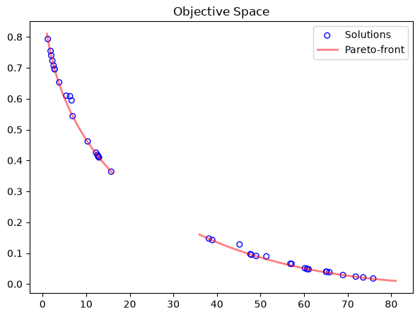

Pengambilan Keputusan (MCDM) & Kinerja
Dalam optimasi multiobjektif, hasil akhir yang kita peroleh bukanlah satu solusi tunggal melainkan sekumpulan solusi non-dominasi (Pareto Front). Di sini, kita akan membahas cara menyaring solusi terbaik (MCDM) dan mengevaluasi kinerja algoritme evolusioner.
Pentingnya Normalisasi
Jangan Bandingkan Apel dengan Jeruk: Jika fungsi objektif $$f_1(x)$$ berkisar antara 0 hingga 100, sedangkan $$f_2(x)$$ berkisar antara 0 hingga 1, maka $$f_1$$ akan mendominasi seluruh perhitungan jarak. Kita wajib menormalisasi nilai objektif terlebih dahulu sebelum melakukan analisis MCDM atau jarak.
Normalisasi dilakukan dengan mencari batas bawah (Ideal Point $z^*$) dan batas atas (Nadir Point $z^{nad}$):
$$nF_i = \frac{F_i - z^*}{z^{nad} - z^*}$$
1. Pseudo-Weights (Bobot Semu)
Pseudo-weights mengukur kontribusi relatif dari setiap solusi terhadap masing-masing objektif. Persamaan pseudo-weight $w_i$ untuk objektif ke-$i$ adalah:
$$w_i = \frac{(z_i^{nad} - f_i(x)) / (z_i^{nad} - z_i^*)}{\sum_{j=1}^{M} (z_j^{nad} - f_j(x)) / (z_j^{nad} - z_j^*)}$$
from pymoo.mcdm.pseudo_weights import PseudoWeights
# Misalkan kita memberikan bobot prioritas seimbang [0.5, 0.5]
weights = np.array([0.5, 0.5])
# Mendapatkan indeks solusi terdekat dengan kriteria bobot kita
i = PseudoWeights(weights).do(res.F).argmin()
best_solution_x = res.X[i]
best_solution_f = res.F[i]
2. Compromise Programming (ASF)
Pendekatan lain menggunakan fungsi skalarisasi pencapaian (Achievement Scalarization Function / ASF) untuk mencari solusi yang paling dekat dengan titik ideal berdasarkan arah preferensi.
from pymoo.decomposition.asf import ASF
# Normalisasi Pareto Front
approx_ideal = res.F.min(axis=0)
approx_nadir = res.F.max(axis=0)
nF = (res.F - approx_ideal) / (approx_nadir - approx_ideal)
# Mencari solusi terbaik dengan ASF
weights = np.array([0.5, 0.5])
i = ASF().do(nF, weights).argmin()Indikator Kinerja Evolusioner
Bagaimana kita tahu jika suatu algoritme konvergen dengan baik? Pymoo menyediakan metrik berikut:
📐 Hypervolume (HV)
Mengukur volume ruang objektif yang didominasi oleh set solusi non-dominasi kita dibandingkan dengan suatu titik referensi (Reference Point). Nilai Hypervolume yang lebih besar menunjukkan penyebaran dan konvergensi solusi yang lebih baik.
📉 Inverted Generational Distance (IGD / IGD+)
Mengukur jarak rata-rata dari titik-titik pada Pareto Front teoritis (ideal) ke solusi yang diperoleh. IGD yang lebih kecil mendekati 0 menunjukkan akurasi optimasi yang sangat tinggi.
from pymoo.indicators.hv import Hypervolume
# Menghitung Hypervolume
metric = Hypervolume(ref_point=np.array([1.2, 1.2]))
hv_value = metric.do(nF)
print("Hypervolume Terhadap Titik Acuan:", hv_value)